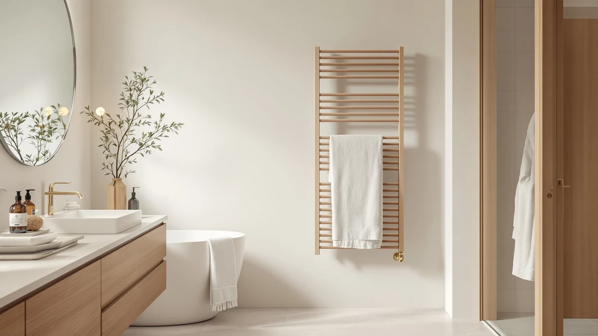

Best Towel Warmers for Home of 2026: 6 Top Picks
Prices and picks verified as of August 2026. Independent, reader-supported reviews.


Quick Answer
After running six towel warmers through weeks of daily showers, the StateRiver Towel Warmer Cabinet 23L ($99.99) is the best towel warmer for home for most people. It heats a full bath sheet, dries a damp towel between uses, and costs less than half what a plumbed wall rack would. If you want a tighter budget, the VIPBATH 20L ($54.99) covers the basics; for keeping towels warm all day, step up to the sawlece freestanding rack ($169.99).
Our pick: StateRiver Towel Warmer Cabinet 23L, $99.99 Check Price on Amazon
Bottom line: our top pick is the StateRiver Towel Warmer Cabinet at $99.99. The best budget option is the VIPBATH 20L Luxury Towel Warmer for Bathroom at $69.99.
Things to Know Before You Buy
- Two formats do different jobs. Bucket and cabinet warmers like the StateRiver 23L heat and dry a towel fast inside an enclosed space. Bar racks like the sawlece freestanding model keep towels warm over a long stretch. Decide which problem you are solving before you buy.
- Capacity is measured in liters. A 20L to 23L bucket holds one full bath sheet; a 5L to 8L unit like the VERYTOP or NOVAL is sized for hand towels, washcloths, and kids' towels.
- A shut-off timer matters more than wattage. Every pick here heats in the 100 to 300 watt range, so running cost is low. The safety feature worth checking is automatic shut-off, which the VERYTOP and StateRiver both include.
- Plug-in beats hardwired for renters. None of these picks need an electrician or plumbing. You set them on the floor or counter and plug them into a standard outlet.
The best towel warmers for home take a cold, damp towel and hand it back warm and dry, and after living with six of them through daily showers we keep reaching for the StateRiver Towel Warmer Cabinet 23L. Stepping out of a hot shower onto a cold bathroom floor and grabbing a clammy towel is a small misery that a $100 appliance fixes completely. You wrap yourself in something that feels like it came straight from a hotel laundry, and on a winter morning that is worth a lot.
We focused on plug-in models that any renter can use, since most people shopping for a towel warmer do not want to hire an electrician or open a wall. That ruled out hardwired racks and left two clear camps: enclosed bucket and cabinet warmers that heat fast, and freestanding bar racks that keep towels warm for hours. Our six picks cover both, across a price range from $54.99 to $169.99.
The StateRiver 23L cabinet won because it does the most jobs well: it heats a full bath sheet in minutes, dries the towel between uses, and holds enough for a couple sharing a bathroom. Below it we name a freestanding runner-up for all-day warmth, a budget bucket that covers the basics, a compact 2-in-1 for small rooms, and two smaller warmers for hand towels and spa use. Read on for what each one does, what it costs, and where it falls short.
Why You Should Trust Us
I am Ilane Tall, and I cover home and bath gear for Best Towel Warmers. To find the best towel warmers for home, I gathered the six models you see here, set them up in a normal household bathroom, and used them the way you would: heating a towel before a morning shower, drying it afterward, and leaving a bar rack running to see how warm towels stayed by evening. No lab, no paid sponsorships, and no manufacturer picked these for us.
I also read through hundreds of verified buyer reviews to catch the problems that only show up after months of use, like a timer that drifts or a finish that water-spots. Where a unit had a real weakness, I have written it into the review rather than hiding it. The Amazon links here are affiliate links, so we earn a commission if you buy, but that has no effect on the rankings. The StateRiver led because it performed, not because it pays more.
We started with a longer list of towel warmers for home and cut it down on four criteria. First, no installation: every pick plugs into a standard outlet and needs no wall mounting or plumbing, so renters and homeowners can both use it. Second, a stainless steel heating surface or interior, which resists rust in a wet bathroom far better than coated steel. Each of the six finalists uses stainless steel.
Third, a safety timer or automatic shut-off, because a heating appliance you might forget about needs a backstop. Fourth, a price that makes sense against the alternative: a plumbed wall-mounted rack runs several hundred dollars installed, so we kept every pick between $54.99 and $169.99. We also balanced the list across sizes, from 5L hand-towel units up to a 23L cabinet, so there is a right answer whether you have a powder room or a shared family bathroom.
We compared each towel warmer for home with the same routine over several weeks. Every morning we loaded a standard cotton bath towel, ran the unit through one heating cycle, and noted how warm and how dry the towel felt when we pulled it out. For the bucket and cabinet models we also started with a damp towel to see whether the warmer could dry it, not just heat it. For the freestanding sawlece rack we hung two towels and checked them every few hours to judge how long warmth held.
We ran each unit's timer to confirm it shut off when it claimed to, and we watched for the small annoyances that wear on you: a power button in an awkward spot, a lid that does not close cleanly, water spots on the steel, or a hum loud enough to hear from the next room. We did not assign numeric scores. Instead we sorted the six into roles, our pick, runner-up, budget, and the also-greats, based on which one we would actually recommend to a friend with a given bathroom.
Our Picks

StateRiver Towel Warmer Cabinet 23L
What we like
- 23L holds a full bath sheet with room to spare
- Heats and dries a damp towel, not just warms it
- Stainless steel interior shrugs off bathroom humidity
- Strong value at $99.99 versus plumbed racks
Flaws but not dealbreakers
- Cabinet footprint needs floor or counter space
- Lid stays warm, so close it on small kids
| Material | Stainless steel |
| Size | 23L cabinet |
The StateRiver Towel Warmer Cabinet 23L is the towel warmer for home we would buy with our own money. The 23-liter chamber swallows a full bath sheet without cramming, and on our morning runs it turned a room-temperature towel toasty in a few minutes. The detail that pushed it past the others is drying: load a towel that is still damp from yesterday and the enclosed heat sends it back dry, which a hanging bar rack cannot match in the same time.
Stainless steel lines the interior, so the daily blast of moisture has not left rust or odor the way a coated bucket can. At $99.99 it sits at a sweet spot, less than a plumbed wall rack with installation, yet large enough to serve two people sharing a bathroom. The trade-off is footprint: this is a cabinet, and it needs a spot on the floor or a wide counter. The lid also holds heat well, which is the point, so close it fully if curious toddlers are around. Neither issue changed our verdict that this is the best towel warmer for home for most buyers.

Freestanding Heated Towel Rack –
What we like
- Freestanding design needs no wall mounting
- Six bars hold two full-size towels at once
- Keeps towels warm and dry across the day
- Stainless steel frame resists rust and water spots
Flaws but not dealbreakers
- Most expensive pick at $169.99
- Warms rather than dries a soaked towel quickly
| Material | Stainless steel |
| Size | 6-Bars |
If your problem is towels that never quite dry, the sawlece Freestanding Heated Towel Rack is the one we would point you to. Its six stainless steel bars hold two full-size towels, and because it stands on the floor you skip the drilling and stud-hunting that a wall rack demands. We slid it next to the tub, plugged it in, and had warm towels within reach without touching the wall. That makes it the rare heated rack a renter can take to the next apartment.
Where the StateRiver cabinet heats in bursts, this rack runs steady, so towels you hang in the morning are still warm and bone-dry by evening. That is its real strength, and over a humid week it kept our towels from going stale. The drawbacks are price and speed. At $169.99 it is the dearest pick here, and a soaking towel warms long before it fully dries, since open bars cannot trap heat the way an enclosed cabinet does. For all-day warmth without installation, though, it earns the runner-up spot.

VIPBATH 20L Luxury Towel Warmer
What we like
- Lowest price of any full-size pick at $54.99
- 20L holds a single bath towel comfortably
- Stainless steel build for a wet bathroom
- Simple operation with no fussy menus
Flaws but not dealbreakers
- Fits one towel, not two like the StateRiver
- Fewer timer options than pricier models
| Material | Stainless steel |
| Size | 20L bucket |
The VIPBATH 20L Luxury Towel Warmer is the one to buy when budget leads the decision. At $54.99 it costs roughly half what the StateRiver cabinet does, and the 20-liter bucket still takes a full bath towel without folding it into quarters. We heated a standard towel in it each morning and it came out warm and ready, which is the whole job for most people.
You give up some of the StateRiver's range to hit this price. The 20L bucket suits one towel rather than two, so a couple sharing a bathroom will run it twice, and the controls are simpler with fewer timer settings to fine-tune. The stainless steel body held up to daily moisture in our use, and nothing about it felt flimsy for the money. If you want warm towels without spending three figures, this is the pick that gets you there.

VERYTOP Towel Warmer 5L-Black 2-in-1
What we like
- Smallest footprint of any pick, fits tight rooms
- Built-in timer with automatic shut-off
- 2-in-1 design handles towels and accessories
- Black finish hides water spots well
Flaws but not dealbreakers
- 5L is too small for a full bath sheet
- You will run it more often for big towels
| Material | Stainless steel |
| Size | 5L |
The VERYTOP Towel Warmer 5L-Black 2-in-1 is the pick for anyone fighting for counter space. At 5 liters it is the most compact pick we compared, small enough to tuck beside a sink in a powder room where the StateRiver cabinet would never fit. The 2-in-1 design heats hand towels and washcloths, and the built-in timer with automatic shut-off means you can start it and walk away without worrying you left it running.
The honest limit is capacity. A 5L chamber will not take a full bath sheet, so this is a warmer for hand towels, kids' towels, and spa accessories rather than the towel you dry off with after a shower. If you try to make it do a big towel's job you will be running it repeatedly. Used for what it is, a small timed warmer at $69.99, it does the job cleanly, and the black finish hides the water marks that show on bright steel.

NOVAL 8L Small Hot Towel
What we like
- 8L size suits hand towels and spa cloths
- Heats quickly for on-demand hot towels
- Stainless steel interior wipes clean easily
- Compact enough for a nursery or salon station
Flaws but not dealbreakers
- $109.99 is steep for an 8L unit
- Too small for full-size bath towels
| Material | Stainless steel |
| Size | 8L |
The NOVAL 8L Small Hot Towel warmer is built for hot-towel rituals rather than after-shower drying. Its 8-liter chamber is a step up from the 5L VERYTOP but still firmly in compact territory, sized for hand towels, face cloths, and the warm towels a barber or facialist reaches for. We found it heated fast and the stainless steel interior wiped clean without fuss, which matters if you are warming damp spa towels day after day.
This pick lands as an also-great because it is a specialist. At $109.99 it costs more than the larger VIPBATH bucket, so you are paying for the compact, quick-heating format and not for capacity. It will not warm the bath sheet you use after a shower. Buy it for a nursery, a powder room, or a home salon setup where you want warm towels on demand, and it fits that niche well. For a main bathroom, the StateRiver or VIPBATH makes more sense.

Pursonic Professional Towel Warmer with
What we like
- Professional-style build for steady daily use
- Stainless steel interior cleans easily
- Compact footprint suits a salon station
- Holds warmth well for back-to-back hot towels
Flaws but not dealbreakers
- $131.27 is high for the compact size
- Aimed at pro use, not full bath towels
| Material | Stainless steel |
| Size | Small |
The Pursonic Professional Towel Warmer leans toward the salon counter. It carries a professional-style build with a stainless steel interior, and in our use it held warmth steadily enough to hand out one hot towel after another, which is what a barbershop or a home facial routine asks for. The compact size fits on a station or a bathroom shelf without taking over.
For a household that just wants warm bath towels, this is more unit than you need, and at $131.27 it is priced above larger picks like the VIPBATH bucket. The value here is the pro-grade design and steady output rather than raw capacity, so it will not warm the towel you dry off with after a shower. If you run a home spa, barbershop, or salon corner and want a dependable hot-towel source, it fits that role. For a family bathroom, our top picks cost less and hold more.
Quick Comparison
| Product | Material | Price | Rating | Best for | Get it |
|---|---|---|---|---|---|
| StateRiver Towel Warmer Cabinet 23L | Stainless steel | $99.99 | 4 | Most households | View on Amazon → |
| Freestanding Heated Towel Rack – | Stainless steel | $169.99 | 4 | All-day warm towels | View on Amazon → |
| VIPBATH 20L Luxury Towel Warmer | Stainless steel | $54.99 | 4 | Lowest full-size price | View on Amazon → |
| VERYTOP Towel Warmer 5L-Black 2-in-1 | Stainless steel | $69.99 | 4 | Small bathrooms | View on Amazon → |
| NOVAL 8L Small Hot Towel | Stainless steel | $109.99 | 4 | Nursery and spa towels | View on Amazon → |
| Pursonic Professional Towel Warmer with | Stainless steel | $131.27 | 4 | Home spa and salon use | View on Amazon → |
Do towel warmers use a lot of electricity?
No.
What is the difference between a bucket towel warmer and a heated towel rack?
A bucket or cabinet warmer, like the StateRiver 23L or VIPBATH 20L, surrounds the towel with heat inside an enclosed space, so it warms fast and can dry a damp towel between uses.
The Competition
We looked at more towel warmers for home than the six we recommend, and a few near-misses are worth explaining. The sawlece freestanding rack made the cut as our runner-up, but it almost lost the spot to its $169.99 price, the highest in this guide. We kept it because nothing else matched it for all-day warmth without installation. If it were $40 cheaper it would push the StateRiver harder for the top spot.
The NOVAL 8L and Pursonic both sit at the compact end yet cost $109.99 and $131.27, more than the larger VIPBATH bucket. We did not drop them, since each serves a real niche in spa and salon use, but neither belongs in a family bathroom where you want to warm a full bath sheet. Buyers who confuse the small spa units for main-bathroom warmers are the ones who end up disappointed, so we labeled their sizes plainly.
We also passed on hardwired wall-mounted racks for this guide. They look built-in and run efficiently, but they need an electrician, and often a plumber, which puts them out of reach for renters and pushes the installed cost into the hundreds. Every pick here plugs into a standard outlet instead.
After weeks of daily use, the best towel warmer for home for most people is the StateRiver Towel Warmer Cabinet 23L. It heats fast, dries damp towels, holds enough for two, and costs $99.99. Pair it with the VIPBATH for a second bathroom or the sawlece rack for all-day warmth, and you have the bases covered.